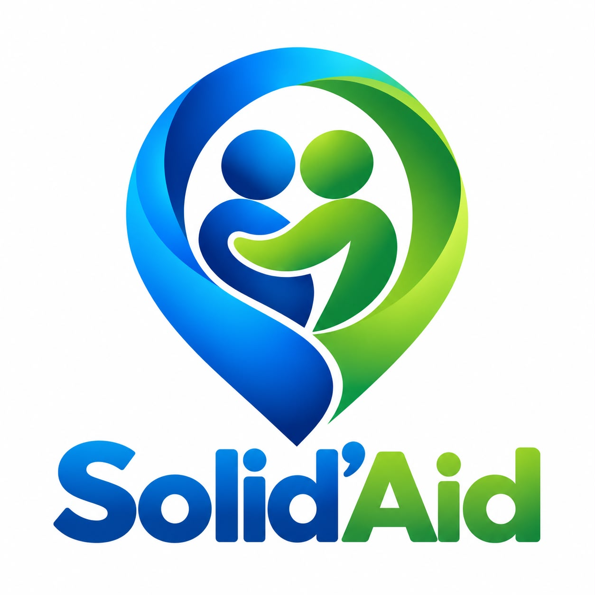

Solid'Aid est l'application qui relie les citoyens, les associations humanitaires et les commerces solidaires pour venir en aide aux personnes en situation de précarité.

Solid'Aid est une plateforme mobile et web de signalement solidaire qui met en relation les citoyens qui observent une situation de détresse avec les associations capables d'agir, à proximité.
Le nom associe « Solidarité » et « Aid » (aide). Son logo, un repère de localisation qui entoure deux personnes enlacées, symbolise la mission du projet : localiser un besoin et y répondre ensemble.
Chaque signalement est géolocalisé et automatiquement orienté vers une association partenaire de la zone concernée. En parallèle, les restaurateurs et commerçants peuvent déclarer leurs invendus alimentaires pour qu'ils soient redistribués plutôt que jetés.
Chaque utilisateur dispose d'un espace adapté à son rôle, avec un accès limité aux seules données qui le concernent.
Signalent une personne ou un groupe en difficulté, précisent les besoins et l'urgence, puis suivent la prise en charge.
Reçoivent les signalements de leur secteur, organisent leurs interventions et collectent les dons alimentaires.
Déclarent leurs invendus, les confient à une association locale et obtiennent un récapitulatif annuel de leurs dons.
Valident les comptes des associations et commerces, modèrent la plateforme et suivent l'activité globale.
Trois étapes simples pour transformer une observation en action concrète.
Je décris la situation observée : localisation, besoins (alimentation, hébergement, soins, vêtements, hygiène…), niveau d'urgence et photo facultative.
Le signalement est automatiquement transmis à l'association partenaire la plus pertinente selon la zone géographique et les besoins.
L'association intervient, met à jour le statut (nouveau, en cours, résolu) et le citoyen suit l'évolution de son signalement.
Position GPS ou adresse, besoins observés et niveau d'urgence : stable, important ou critique.
Mise en relation avec l'association locale adaptée, sans que les signalements ne soient jamais rendus publics.
Déclaration d'invendus alimentaires, créneaux de retrait et affectation à une association proche.
Tableau de bord adapté à chaque rôle pour suivre signalements, interventions et dons.
Collecte minimale, accès restreint par rôle, mots de passe chiffrés et suppression de compte à tout moment.
Chaque association et chaque commerce est validé manuellement par un administrateur avant d'accéder au service.
Avec Solid'Aid, un simple signalement suffit pour qu'une association proche puisse intervenir. Rejoignez le réseau solidaire de votre ville.
Comment nous protégeons vos donnéesSolid'Aid ne remplace pas les services d'urgence. En cas de danger immédiat, appelez le 15 (SAMU), le 18 (pompiers), le 17 (police) ou le 112 (numéro d'urgence européen).